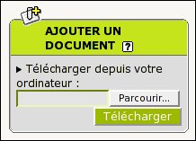
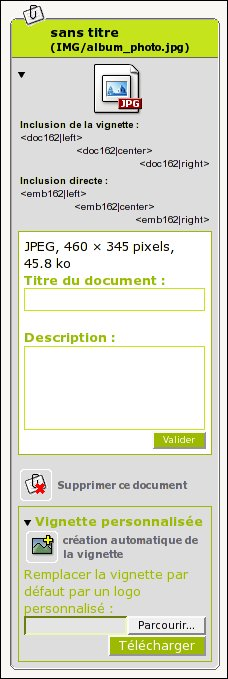
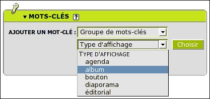

Un album photo est un article, dont le squelette (l'affichage sur le site public), est spécifique et se présente sous la forme d'une mosaïque d'images.

- Créer votre article "normalement" (voir : Ecrire
ou modifier un article). Le titre de l'article sera alors le titre de
l'album photo, et le texte (et chapeau, post-scriptum, ...) en sera une
présentation détaillée.
Une fois votre article créé, vous pouvez alors y attacher des documents, en l'occurence des photos, dessins, ...
- Attachez vos images en tant que documents :
 Cliquez d'abord sur le triangle noir pour développer (ci-contre). Cliquez sur [Naviguer...], puis allez sélectionner l'image que vous souhaitez attacher à l'article. Cliquez ensuite sur [Télécharger], attendez que le fichier ait été chargé sur le serveur, plus le fichier est gros plus le transfert sera long. La largeur recommandée pour un affichage optimal est d'environ 500 pixels.
Une fois le fichier joint, la page se rafraichit.
- Dans les paramètres de l'image que vous avez jointe, vous pouvez :

Il s'agit de l'aperçu qui permettra d'afficher la photo quand on clique dessus.
Personnaliser le titre et descriptif du document, soit le commentaire de la photo.
Vous pouvez également supprimer le document tant que l'article est toujours "en cours de rédaction". Ensuite seuls les administrateurs pourront supprimer/modifier le document.
Remplacer la vignette par défaut en mettant une version plus petite de l'image (environ 100 pixels de largeur). Cliquez sur [Naviguer...], puis allez selectionner l'image souhaitée et cliquez ensuite sur [Télécharger].
Attention à ne pas mettre une image trop volumineuse, il est recommandé de choisir des vignettes de 100 pixels de largeur environ.
Pour définir l'ordre dans lequel les photos vont défiler et apparaître, il vous suffira de numéroter le titre des documents, en rajoutant : <numéro><point><espace> devant le titre de chaque document. Par exemple :
1. Première photo
2. Seconde photo
30. Troisième photo
45. etc ... - Une fois votre album photo "fini", n'oubliez pas d'attacher le mot-clé
"album" à votre article, afin que sur
le site public votre article prenne la mise en page propre à un album
photo.
remarque : pour voir apparaitre la zone "mots-clés", il faut être en "interface complète".
Cliquez sur le triangle noir pour développer, sur le groupe "Type d'affichage", sélectionnez le mot-clé "album" enfin cliquez sur [Choisir].